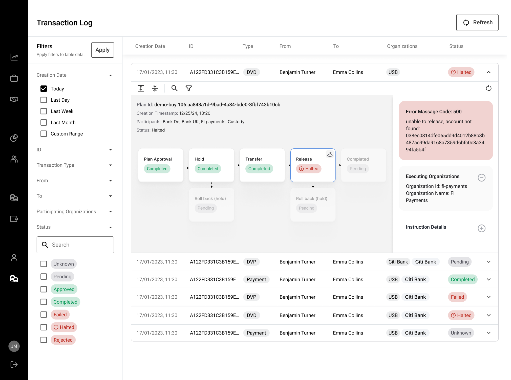
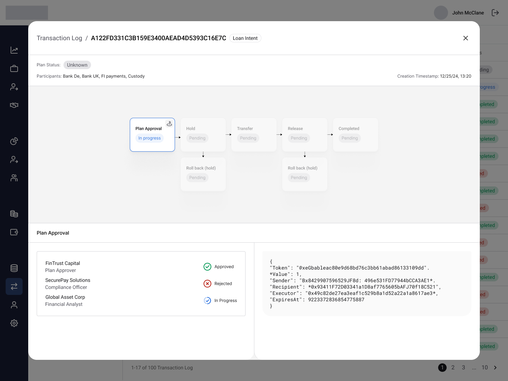
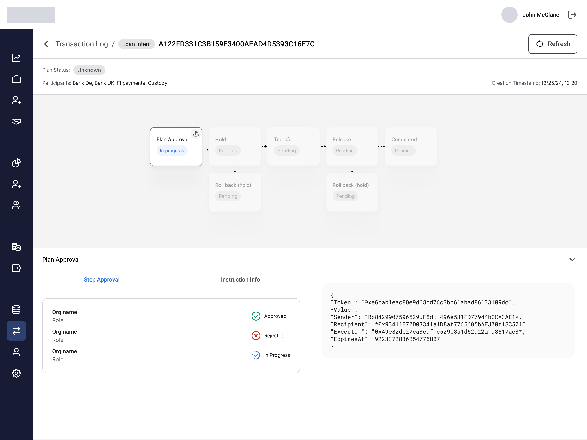

Work / Ownera (fintech, backed by J.P. Morgan) · 2023 → 2026
From JSON Dump to Transaction Lifecycle

-
Ownership
Sole designer
-
Scope
The platform's most-used screen
-
Sector
Fintech · Institutional
-
Shift
CS escalations → self-serve diagnosis
TL;DR
Problem
The admin's most-used screen showed transactions as raw JSON trees. Every stuck transfer became a Customer Success escalation.
What I did
Reframed the log from a data dump into a transaction lifecycle: a flow view for diagnosing one transaction, connected to a table view for monitoring many.
Result
The users closest to the pain, operations and CS, could read a stuck transaction at a glance instead of escalating it.
Context
Ownera is a fintech platform connecting banks and financial institutions to trade tokenized digital assets, backed by J.P. Morgan. I worked on its Admin Platform, where finance teams manage every transaction in the system; the Transaction Log was its most-used screen, lived in daily by the clients' operations teams and by Customer Success. I was the sole product designer, working directly with the Director of Product.
The Moment
A banker gets a call: a client's expected transfer never arrived. They open the transaction log to check, and hit a wall of raw JSON. The information is all there, including why it's stuck, but nothing is readable. So they do what everyone did: forward it to Customer Success to decode. Every incident became an escalation, and in a platform sold to financial institutions, a core screen that looks like a developer console is a risk in every demo.

Bank users were using Ctrl+F to find transactions in a financial system.
The Goal
Full self-service for Operations: track, troubleshoot, and solve on their own, without opening a ticket. The KPI was set before any design started.
The Target
−50%
Transaction Log support tickets, resolved without opening a ticket.
The Baseline
>20%
Of all support tickets came from the Transaction Log.
Process
The structure came first: an alert banner on top, the lifecycle flow with the failure marked at its exact stage, and a context panel for approvals. Grayscale until it worked.
The skeleton every later decision hung on.
The Decisions
01A lifecycle, not a tree
The assumption was that users needed more data and more filters. Watching operations people work showed the opposite: they arrive already knowing which transaction they need, search by ID, and want context, what happened, where it stopped, what to do next. The JSON already contained a full process: stages, organizations, statuses. So I didn't invent a new model, I gave the existing one the representation it deserved: each transaction as a left-to-right flow, with the failure marked at the exact stage it occurred. Same data, shown as the process it always was.
02Two views, not one
Diagnosing one transaction and monitoring hundreds are different jobs. I split the screen into a full-screen flow for depth and a table for scale, and accepted the context switch on purpose: one view doing both jobs does neither well.


03Search that replaces Ctrl+F
A dedicated search bar at the top of the log. Users arrive already knowing which transaction they need, and find it by the identifiers they actually hold, instead of scanning the table or hunting with the browser's Ctrl+F. The trade-off: search owns the top of the screen, accepted on purpose.
04From viewer to repair tool
The screen changed from a read-only status viewer into a real-time repair tool, with Fix and Retry available in context. Every fix used to mean switching to another tool; now the diagnosis and the action live on the same screen.
05What I rejected: inline expansion
Inline expand/collapse inside the table, essentially what the old screen did, was the safe choice. But real usage showed no scenario where users compare several transactions side by side; they focus on one. So each transaction got a screen of its own.



Same data, three containers, before the full-screen flow won.
Validation
Tested with the people who lived the problem: the CS team, before the demo, on tasks taken straight from real tickets — why did this transaction fail, and where did it stop? The pass bar: when the people who used to decode the JSON could answer on their own, it worked.
User Flow
From alert to answer, without a ticket.
01 · Entry
A client call, an alert, or routine monitoring.
02 · Find
Search by the ID the user already holds.
03 · Focus
Open the transaction, one screen of its own.
04 · Diagnose
The flow view marks the exact failed step.
05 · Act
Fix or retry, right from the flow.
06 · Done
Answered on the spot. No ticket, no escalation.
Design System
The Transaction Log was built on a design system I created from scratch as Ownera's only designer, working with a developer who had built monday.com's Vibe design system. A Roboto type ramp, primitive and semantic color tokens, and one set of components that carried both platforms.
Ag
Roboto · type ramp, h1 → body3
Primitive tokens · Blue 50 → 950
Semantic tokens · one language across both platforms
Before · After
A raw JSON tree. The answer is in there, somewhere.
Impact
Operations and CS diagnose stuck transactions on their own, without escalating. Tracked by ticket tag, two months after launch, against a target of −50% set before any design started.
−40%
Stuck-transaction tickets
Two months after launch, tracked by ticket tag, against a −50% target.
10h
CS time saved each week
Time back for complex user issues.
Beyond the numbers
The work was presented and approved up to the CTO, the GM, and the CEO.
Looking Back
What worked: anchoring every decision in the research. Under a hard deadline it kept the design defensible, and the ticket numbers after launch backed it up. What I'd change: I met users only through CS calls; next time I'd sit with Bank Operations from day one. The lesson: under a deadline, research is not a luxury. It's what lets you move fast without guessing.
Next Project